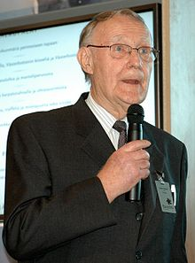

Kamprad was born part of Älmhult Municipality, Sweden. He was raised on a farm called Elmtaryd (presently standardized Älmtaryd) near the small village of Agunnaryd in Ljungby Municipality in the province of Småland. His paternal grandfather was from Germany, but moved the family to Sweden.
Kamprad began to develop a business as a young boy, selling matches to neighbors from his bicycle. He found that he could buy matches in bulk very cheaply from Stockholm, sell them individually at a low price, and still make a good profit. From matches, he expanded to selling fish, Christmas tree decorations, seeds, and later ballpoint pens and pencils. When Kamprad was 17, his father gave him a cash reward for succeeding in his studies.
IKEA was founded in 1943 at Kamprad's uncle Ernst's kitchen table. In 1948, Kamprad diversified his portfolio, adding furniture. His business was mostly mail-order.The acronym IKEA is made up of the initials of his name (Ingvar Kamprad) plus those of Elmtaryd, the family farm where he was born, and the nearby village Agunnaryd.
In June 2013, Kamprad resigned from the board of Inter IKEA Holding SA and his youngest son Mathias Kamprad replaced Per Ludvigsson as the chairman of the holding company. Following his decision to step down, the then-87-year-old founder explained, ”I see this as a good time for me to leave the board of Inter IKEA Group. By that we are also taking another step in the generation shift that has been ongoing for some years.” Mathias and his two older brothers, who also have leadership roles at IKEA, work on the corporation's overall vision and long-term strategy.
The Dutch-registered Stichting INGKA Foundation is named after Ingvar Kamprad (i.e., ING + KA) who owns INGKA Holding, the parent company for all IKEA stores. In May 2006 the charitable foundation was reported by The Economist to be the world's wealthiest charity, however The Bill and Melinda Gates Foundation has since become larger. Despite its large endowment its primary purpose is corporate tax-minimisation and anti-takeover protection for IKEA.Kamprad is chairman of the foundation.
According to Swedish business weekly Veckans Affärer,Kamprad is one of the world's wealthiest people. This report is based on the assumption that Kamprad owns the entire company, an approach both IKEA and the Kamprad family reject. Kamprad retains little direct ownership in the company, having transferred his interest to Stichting INGKA Foundation and INGKA Holding as part of a complex tax sheltering scheme that leaves his actual degree of control vague.
In March 2010, Forbes magazine estimated Kamprad's fortune at US$23 billion, making him the eleventh richest person in the world. A year later, he fell to 162nd after his lawyers produced documents proving that the foundation he established and heads in Liechtenstein owns IKEA, and that its bylaws bar him and his family from benefiting from its funds.In June 2015, Kamprad was listed as the eighth wealthiest person in the world in the Bloomberg Billionaires Index, with an estimated net worth of $43.2 billion.Forbes reported Kamprad's net worth as of February 2016 to be $3.4 billion.
While generally a private person, Kamprad has published a few notable works. He first detailed his philosophies of frugality, simplicity and enthusiasm in a manifesto entitled A Testament of a Furniture Dealer. Written in 1976, it is considered the fundamental ideology of the IKEA retail concept, and its values are integrated into all of IKEA's activities.
Kamprad also worked with Swedish journalist Bertil Torekull on Leading by Design: The IKEA Story. In the autobiographical book, Kamprad further describes his philosophies and the trials and triumphs of the founding of IKEA.
Many stories about Kamprad are a part of his heritage. When he talks to IKEA staff at different locations, his main theme is often management by example, and he uses himself as an example. He always flies economy class, sits in second-class train cars when possible, and never stays at expensive hotels.
In 1994, the personal letters of the Swedish fascist activist Per Engdahl were made public after his death, and it was revealed that Kamprad had joined Engdahl's pro-fascist New Swedish Movement (Nysvenska Rörelsen) in 1942, at the age of 16. Kamprad had raised funds for and recruited members to said group at least as late as September 1945. When Kamprad quit the group is unknown, but he remained a friend of Engdahl until the early 1950s.
Kamprad devotes two chapters to his time in Nysvenska Rörelsen in his book Leading by Design: The IKEA Story and, in a 1994 letter to IKEA employees, called his affiliation with the organization the "greatest mistake of his life".Kamprad has explained his teenage engagement in New Swedish Movement as being politically influenced by his father and grandmother in Sudet-Germany.
In 2011, journalist Elisabeth Åsbrink revealed that the Swedish security service created a file on Kamprad already in 1943 titled "Nazi" and that Kamprad in an interview in 2010 told her: "Per Engdahl is a great man, and I will maintain that as long as I live".
Writing in UK newspaper The Daily Telegraph in August 2011, Richard Orange noted of the 1943 file: "It proves for the first time that Mr Kamprad was an active member of Svensk Socialistisk Samling – the successor to the Swedish Nationalist Socialist Workers Party – even detailing his membership number, 4013. It quotes letters intercepted from Mr Kamprad, then 17, in which he enthuses about recruiting new members and says that he ‘misses no opportunity to work for the movement’". Orange added, "The secret service concluded that, as Mr Kamprad received the party's youth newspaper, he must have held ‘some sort of official position within the organisation’."The following day, the BBC reported: "A Swedish expert on far-right extremism, Anna-Lena Lodenius, told Radio Sweden that Mr Kamprad's Nazi involvement could no longer be dismissed as the by-product of an accidental friendship with Per Engdahl. His involvement in another fascist organisation, she said, showed he must have been ‘perfectly aware’ of what it stood for". The BBC report also noted that, "a spokesman for Mr Kamprad said he had long admitted flirting with fascism, but that now, ‘there are no Nazi-sympathising thoughts in Ingvar's head whatsoever’".
Kamprad and his first wife Kerstin Wadling adopted a daughter, Annika.
He lived in Épalinges, Switzerland, from 1976 to 2014. According to an interview with TSR, the French-language Swiss TV broadcaster, Kamprad drives a 1993 Volvo 240, flies only economy class, and encourages IKEA employees to use both sides of pieces of paper. He reportedly recycles tea bags and is known to pocket the salt and pepper packets at restaurants."Kamprad has also been known to visit IKEA for a "cheap meal". He is known for purchasing Christmas paper and presents in post-Christmas sales. The company he created is still known for the attention it gives to cost control, operational details and continuous product development, allowing it to lower its prices by an average of 2-3% over the decade to 2010, while continuing its global expansion. Kamprad explains his social philosophy in his "Testament of a Furniture Dealer": "It is not only for cost reasons that we avoid the luxury hotels. We don't need flashy cars, impressive titles, uniforms or other status symbols. We rely on our strength and our will!" Kamprad owns a villa in Switzerland, a large country estate in Sweden and a vineyard in Provence, France. Kamprad was also known for driving a Porsche for several years.
While working with furniture manufacturers in Poland earlier in his career, Kamprad became an alcoholic. In 2004 he said that his drinking was under control.[20]
In the 1960s, Kamprad married his second wife, Margaretha Kamprad-Stennert (1940-2011), whom he met when she was twenty years old.[21] They had three sons: Peter, Jonas and Mathias.
Kamprad has named his sons as the sole heirs of an entity called the Ikano Group, which holds a substantial minority stake in IKEA estimated at US$1.5 billion. His adopted daughter Annika will receive approximately $300,000.
In June 2013, Kamprad announced that he intended to move back to Småland in Sweden by the end of the year, and did so in March 2014.